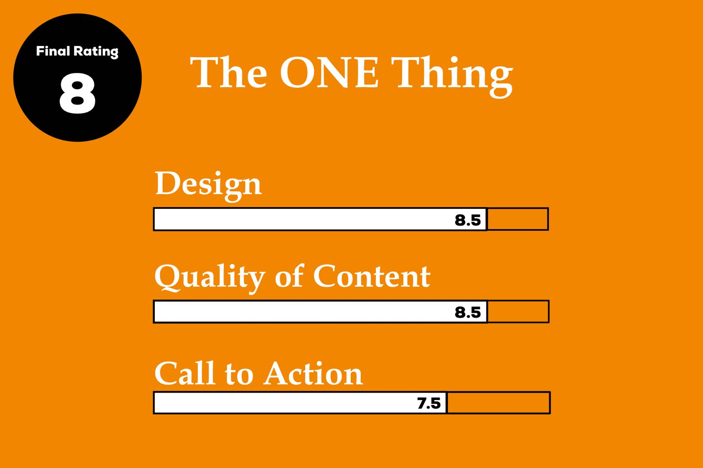

The ONE Thing
Gary Keller, Jay Papasan
By Henry Wang | May 6, 2019

Who is this book for?
Individuals who:
- want more in their life (wealth, business success) but are still trying to find the right path.
- are doing many things but aren’t getting the results they want.
- are looking to increase their productivity and staying on track with their goals.
Before I read this book, there were many activities I filled my time with (including but not limited to the Column, math, programming, piano, clarinet, and saxophone). After reading The 10X Rule (see the review here), I was super convinced that by evenly distributing my attention in these passions and backing them up with massive action, I would achieve extraordinary results. Time went by and I problems accumulated: not only was I not achieving the results I wanted, I was losing time with my family and burnt out at the end of each day. To solve this problem, I went to the favorite place to de-stress: the bookstore. At the business/self-help section, the title of The ONE Thing really captivated me (“The Simple Truth Behind Extraordinary Results”).
After the read, I have to say that the author really delivered.
Conflicts
Reading this book after reading The 10X Rule initially caused many problems in deciding which book’s information was correct. If you have read this book or read a brief review, you’ll know that Grant (the author)’s intended takeaway was to increase the amount of massive actions you are taking. Surprisingly, The ONE Thing first instructed me to do less. “How did these things fit together and whose advice should I take in?” I asked myself. Since what the book is instructing me to do is different than my day-to-day, I decided to be open minded and give The ONE Thing a shot.
As I kept reading, I learned that doing less meant finding ONLY ONE (or 2 - 3 in my opinion) thing(s) to focus on.
Why is this?
Unproportional results come from unproportional attention.
In order for us to achieve extraordinary results, we must spend more time and effort and put in more action on skills we want to master. Since we have limited amounts of attention, time, and willpower each day, it is not possible for us to master everything at once.
Due to this, I realized that The ONE Thing and The 10X Rule actually form a symbiotic relationship. We can choose to put all our attention, time, willpower, and massive action into a couple things we want to become adept in or attempt too many “things” (i.e. learning too many skills at a time, starting too many businesses) and not mastering any one. Therefore, massive action without focused (unproportional) attention is nothing.
Unique Takeaways
Note: All of these main ideas are equally important. Since the takeaways build upon each other, they are organized below in this order.
The Domino Effect
The ONE Thing introduces the concept that a domino is actually capable of bringing down another that is 50% larger. Thus, if we start off with a domino that is 2 inches in height and continue building a trail where each subsequent domino is larger by 50%, we realize that the 57th domino will be as tall as the distance from Earth to the Moon.
Through this example, the authors explain that we need to begin tackling our goal (the biggest domino) by lining up smaller, equally important goals (such as daily, monthly, and yearly goals) and finding the ONE thing we should be doing right now (the smallest domino). The energy needed to whack the first domino down will create momentum for us to achieve our daily, monthly, and yearly targets. Ultimately, our “someday” goal will fall as well.
Balance is a Lie
This point was one of the most important in allowing me to understand the concept of The ONE Thing as a whole. As mentioned previously, I thought that if massive action and unparalleled focus was put in everything I did, it was possible to master many different skills at once. I kept on evenly distributing my time into every activity and thought I could commit all my energy and willpower into each. Through reading The ONE Thing, I realized that I cannot issue my time into so many skills and achieve proficiency in each.
Again,
Unproportional results come from unproportional attention.
Evenly distributing your time is the same as spreading your attention, focus, and energy. What does this mean? Imagine you are trying to master 6 skills. You don’t know when you want to achieve proficiency; you simply want to master them someday. Your current plan to achieve this goal is by dedicating blocks of time to work on ALL these skills every day. Let’s use my situation of giving massive action and unparalleled focus into every activity. If you do so, you might or might not realize three things: 1. You aren’t deeply intaking the knowledge since your time is spread out through learning so many skills, 2. Your skills are all “average”, and 3. You are preparing your body to be attacked by some virus.
These are all effects I experienced while working through a myriad of skills. I never realized that I was burning out. One day, I suddenly caught a terrible case of the flu; the headache that resulted completely destroyed my ability to work on anything (what’s better: focusing on less things or losing the ability to work at all!).
Due to this, there is no such thing as "skill balance.” If you want to achieve extraordinary results, you must be able to put away less important activities for a later time and focus on 1 - 3 (book suggests ONE only) life-changing skill(s) that you will dedicate all your time, energy, and willpower into. "Balancing" your skills by distributing equal time into each will not help you achieve mastery.
The Focusing Question
“What is the ONE thing I can do right now so that everything else will become easier or unnecessary?”
In my opinion, the Focusing Question is the most important part of the book that ties everything together. The format of the question helps us narrow the “someday” goal down to ONE thing we should do right now so that after it is done, we save attention, time, and actions on other tasks we may need to accomplish by making them easier or even unnecessary. It can applied to any goal from your business or job to your spiritual life and personal health.
We can now approach every area of life with this question to make sure that only what matters most and helps us achieve the “someday” goal is done.

Goal Setting to the Now
As powerful as the Focusing Question is, it doesn’t help us go very far unless we have a structured, concrete goal setting plan.
Dreaming big is the first step to success. In our youth, we had the concept of dreaming big inside of us until some adult came along and told us, “You’ll never become an astronaut” or “Play it safe.” However, dreaming big gives us a goal so large that we will continuously feel motivated to achieve it.
A big dream allows for a big goal. We can use this to figure out our five year goal, our one year goal, our monthly goal, and so on until we reach the current moment.
For the current moment, we ask ourselves: What is the ONE thing I can do right now to achieve my daily goal, which helps achieve my weekly goal, which helps me achieve my monthly goal, etc. It is important to connect one goal with another so we will have a geometric progression of success (in other words, a domino pattern in line and ready for us to knock down).
My Call to Action
Goal Setting Journal
A few months ago, I abandoned a journal I used to use for reflecting what I did each day. It has now been converted to a journal filled with a few goals I want to achieve. On the front page, we have the date of achievement and the someday goal along with the 5 year, one year, monthly, weekly, and daily goals.
Some goals fluctuate often while others stay constant for a long time. For example, I update my daily target every day, even if it may be the same as the day before. Doing so helps me with remembering my goal and keeping it in mind when going through life.
Schedule Notebook
Interestingly, the schedule notebook also comes from an abandoned diary. In the first week of April 2019, I picked it up again and decided to make something called a “schedule and time-blocking notebook.”
On each page, I would make a timetable of the day with the task, time, and a small description of what I need to work on. I have found this visual representation to work together with the goal setting journal in managing my day and focusing on the task at hand.
To debrief at the end of each day, I would list the 1 - 3 things I want to achieve (my “ONE things”). Like before, writing the goals down again helps me remember the most important activities that have the most potential in changing my life. This allows me to have next day’s actions based on these priorities, which makes sure that I keep whacking the right dominoes.
Concluding Statements
Before reading The ONE Thing, I believed that the only way to become successful is to hustle and work hard at many things in different areas. The ONE Thing changed my life by reminding that I am a human, not a machine. By narrowing down to a couple (or even ONE) priorities, it is possible for us to achieve our dreams and acquire mastery. It taught me to focus on one or two things at a time and helped me realize that I still have plenty of time to master other skills and start new hobbies after I become adept at my current pursuits.
Before I give this book a solid 8/10, I would like to end with one last idea:
If you chase two rabbits, you will not catch either one.
